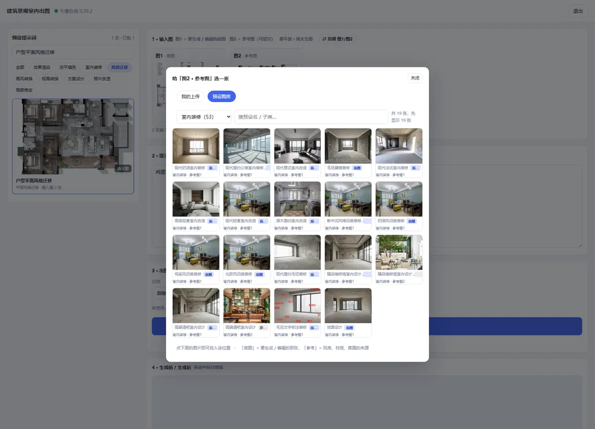
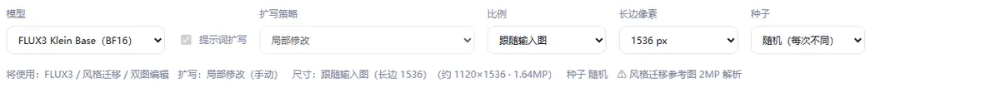
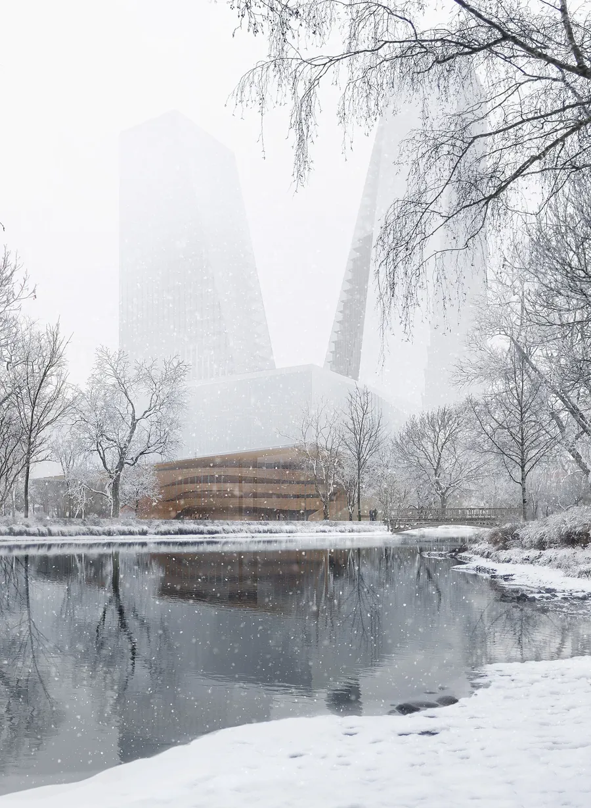
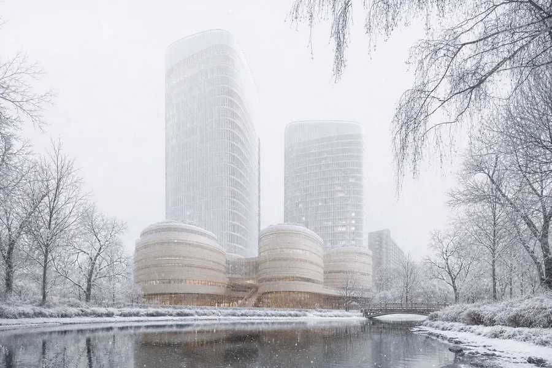
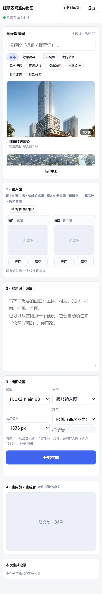

图1 · 底图
要生成或编辑的那张图。体块、视角、开间和场地关系由它锁定。
先把“要改什么”和“参考什么”分开，再让模型在明确的边界里展开。
要生成或编辑的那张图。体块、视角、开间和场地关系由它锁定。
只提供风格、材质、光影或氛围，不把参考图的场景直接搬进底图。
两个槽位都留空时进入纯文生图，用于概念、氛围和方案方向的快速推演。
每次生成都留下输入、参数、种子和结果，方便比较与复现。
从 9 类任务里选一个起点，自动带入提示词、输入顺序和扩写路由。
放底图、参考图，或使用内置图库；两图预设会自动识别底图顺序。
写清保留项和变更项，或让 FLUX3 按任务档生成专业英文提示词。
选择 FLUX2 / FLUX3、比例、长边和随机或固定种子。
拖动前后对比，回看模型、扩写策略、实际尺寸和种子，再决定是否保留。
从预设图库到模型设置，再到公共预设的前后对比。




示例来自内置公共预设“建筑风格迁移”，不使用客户项目图纸。

进入工作台执行，或回到工具页配置自己的入口。